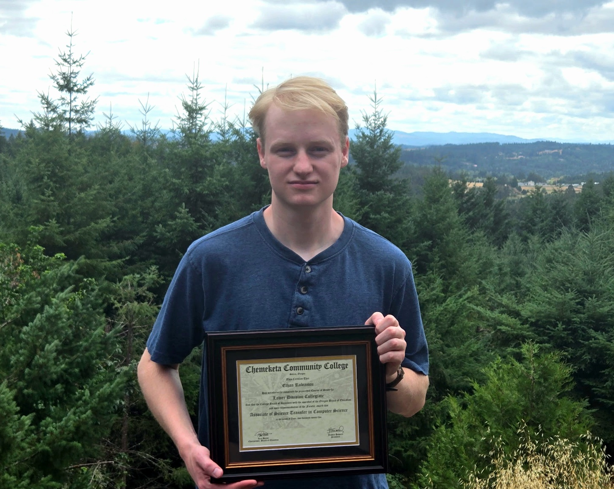

About Me
A highly-motivated CS student and amateur Software Developer
Being born in the early 2000's, I was fortunate to grow up in a time of revolutionary advances in technology. Throughout my childhood, I was blessed with a curiosity and fascination with everything; history, the arts, science, technology. But of the many topics I pursued, technology was one of the most fascinating to me. From updates on NASA's aspirations and developments towards a possible Mars exploration, early robotics, the invention of smartphones, and of course the ever rapidly growing internet, there was so much for my young mind to take interest in. I was lucky to live at a time where I could not only witness the technological revolution of the 21st century, but grow up alongside it, and now aspire to be a part of it as new advancements such as artificial intelligence and quantum computing set themselves up to revolutionize the world furthermore.
In 2023, I began my studies in Computer Science at Chemeketa Community College where I would earn my Associate's of Science. During my time there, I became skilled in a lot of different areas of software development, learning languages such as C++, C, Python, and Assembly. Additionally, I learned much of the theory and mathematics involved in computations, ranging from data structures, algorithms, to even a basic understanding of the fundamentals of machine learning. In the fall of 2025, I continued my studies at Oregon State University where I am now pursuing my Bachelor's of Science in CS, with a focus on Computer Systems. My goal is to grow my skills and knowledge of software engineering and development and ultimately, contribute to the advancements and innovations of today and the future.